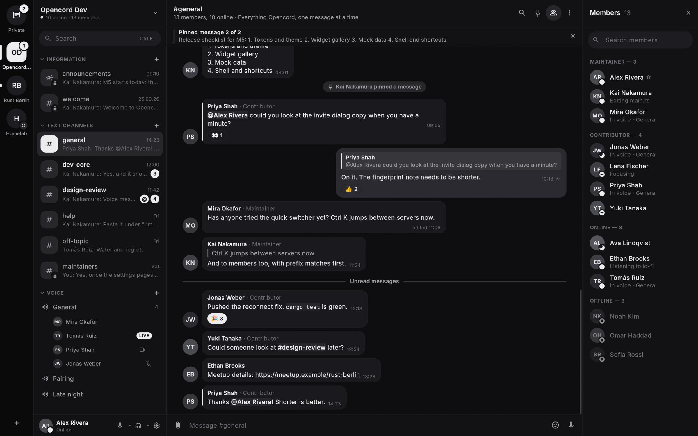
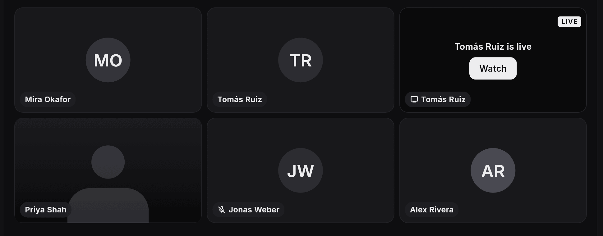

Open source · Self-hosted
Opencord
Discord-style servers you run yourself. Voice, video, screen sharing and private messages, on your own hardware.
Voice & video
Screen share
Encrypted DMs
Music
Windows · macOS · Linux


Discord-style servers you run yourself. Voice, video, screen sharing and private messages, on your own hardware.